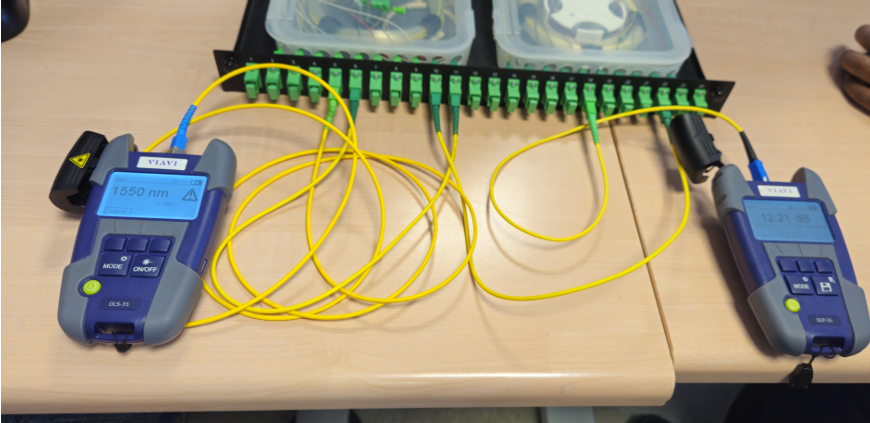
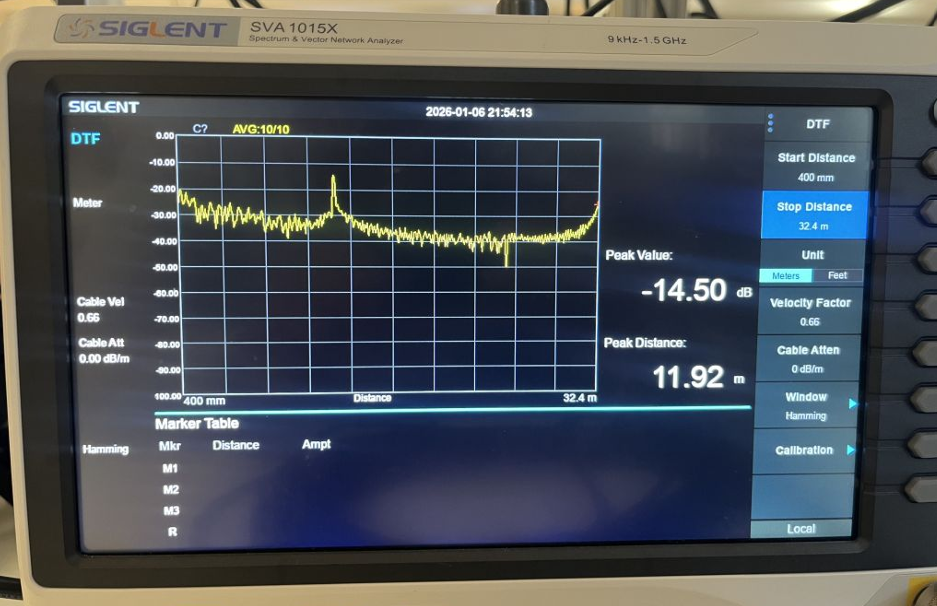
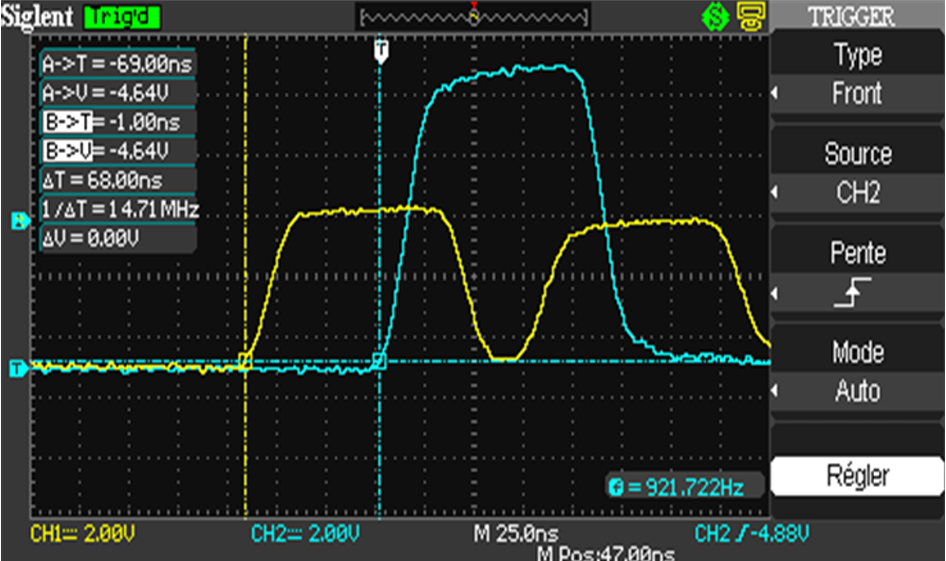

Projet 1.03 – Découverte des dispositifs de transmission
Contexte & Cahier des charges
La fiabilité d'une infrastructure réseau repose d'abord sur la qualité de sa couche physique (Couche 1 du modèle OSI). L'objectif de cette SAE était de caractériser expérimentalement les différents supports de transmission utilisés en entreprise : la fibre optique (monomode), le câble coaxial (RG58) et les paires torsadées (Ethernet)[cite: 630, 698, 699].
Le cahier des charges exigeait la réalisation d'une campagne de mesures en trinôme, la manipulation d'équipements de métrologie de pointe (photomètres, analyseurs de spectre, oscilloscopes), et la rédaction de rapports d'ingénierie détaillant nos bilans de puissance et calculs de vélocité de propagation[cite: 624, 690, 693, 694]. L'analyse mathématique et physique des signaux s'est appuyée sur les fondamentaux théoriques acquis lors de mon parcours en Bac général (spécialités Mathématiques et Physique-Chimie), facilitant la modélisation des phénomènes d'atténuation.
Démarche de production : De la mesure optique à l'analyse temporelle
Le travail s'est divisé en deux grands pôles d'expertise : l'étude photonique d'une liaison fibre optique, puis l'analyse fréquentielle et temporelle de liaisons en cuivre[cite: 618, 692, 693, 694].
Étape 1 : Photométrie et Bilan de puissance (Fibre Optique)
Apprentissage mobilisé (AC12.01) : Mesurer et analyser les signaux. Sur la liaison "L5", nous avons utilisé un kit VIAVI (Injecteur LASER OLS-35 et Photomètre OLP-35) avec une longueur d'onde de 1550 nm[cite: 628, 629, 632, 639]. Après le calibrage du zéro, nous avons relevé une atténuation globale de 12,21 dB[cite: 635, 652].
📸 Trace d'intervention : Dispositif de Photométrie

Cette capture de notre installation illustre la méthode par insertion. Le signal traverse la bobine et les composants passifs à l'intérieur du tiroir, nous permettant de déduire l'architecture interne (ici, la présence probable d'un coupleur optique 1 vers 8)[cite: 637, 642, 676].
Étape 2 : Réflectométrie DTF (Câbles Cuivre)
Apprentissage mobilisé (AC12.02) : Caractériser des systèmes de transmission. Pour localiser les fins de câbles (ruptures d'impédance), nous avons paramétré un analyseur de réseau Siglent SVA1015X en mode DTF (Distance To Fault)[cite: 693, 696, 702]. Nous avons configuré la vélocité nominale (NVP) à 0.66 pour le câble RG58, et utilisé le mode "Manuel" pour filtrer le bruit initial du connecteur, obtenant ainsi une longueur mesurée de 12 mètres pour le coaxial[cite: 698, 703, 718, 827].
📸 Preuve de mesure : Analyseur de spectre (DTF)

Le placement précis du marqueur "Marker 1" sur le pic de réflexion du signal nous a permis de valider avec exactitude la longueur du support physique[cite: 724].
Étape 3 : Régime Impulsionnel et Analyse Temporelle
Pour corroborer les résultats du réflectomètre, nous avons injecté une impulsion de 100 ns via un GBF, et mesuré le temps de parcours de l'onde réfléchie à l'aide d'un oscilloscope (Delta T de 68 ns)[cite: 989, 1005].
🚨 Analyse d'incident : L'écart de mesure entre les deux protocoles
Le problème : À l'issue de notre calcul de la vélocité de propagation (v = c * 0,66), l'oscilloscope nous a donné une longueur théorique de 13,5 mètres pour le câble coaxial[cite: 1026, 1028]. Or, notre mesure précédente à l'analyseur de spectre (DTF) indiquait exactement 12 mètres[cite: 827]. Cet écart de 1,5 mètre remettait en question la précision de notre métrologie.
⚙️ Résolution et Rigueur scientifique :
En étudiant notre montage, nous avons identifié la cause physique de cette divergence : la mesure temporelle à l'oscilloscope incluait la longueur des cordons de raccordement BNC en T et les adaptateurs, qui étaient traversés par l'impulsion électrique mais non comptabilisés dans le calibrage initial du DTF. De plus, le placement du curseur sur le front montant d'un signal atténué ajoutait une marge d'erreur. Cette prise de recul a permis de valider la cohérence des deux méthodes.
📸 Preuve technique : Mesure Temporelle

L'observation du décalage (68 ns) entre le signal source (CH1) et le signal réfléchi (CH2)[cite: 990, 993, 1005].
Bilan du Projet & Prise de recul
Ce travail en laboratoire a transformé des concepts théoriques abstraits (impédance, dB, longueur d'onde) en réalités physiques tangibles. L'importance de la méthode de calibrage (faire le "zéro") s'est avérée cruciale pour la justesse d'un audit de câblage[cite: 635].
Compétences consolidées
La prise en main autonome d'équipements de métrologie professionnels (VIAVI, Siglent, Oscilloscopes), la réalisation de bilans de puissance optique, et la production de rapports d'expertise en équipe.
Évolution des pratiques
Pour de futures analyses, j'accorderai une vigilance encore plus stricte au paramétrage du "Velocity Factor" (NVP) sur les analyseurs de réseaux, car une variation infime de ce paramètre fausse proportionnellement l'ensemble du calcul des distances.
Validation des apprentissages finaux